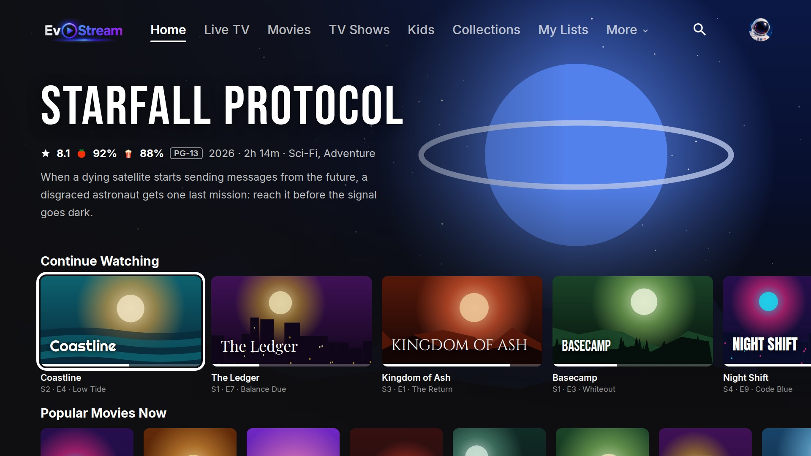
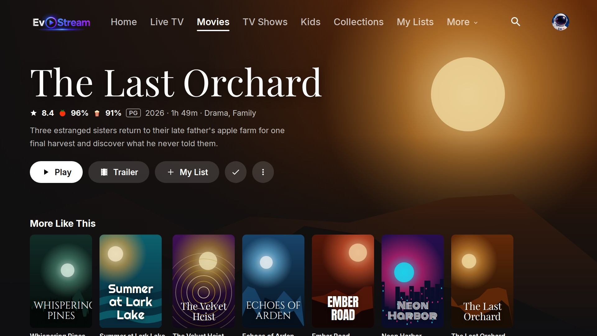
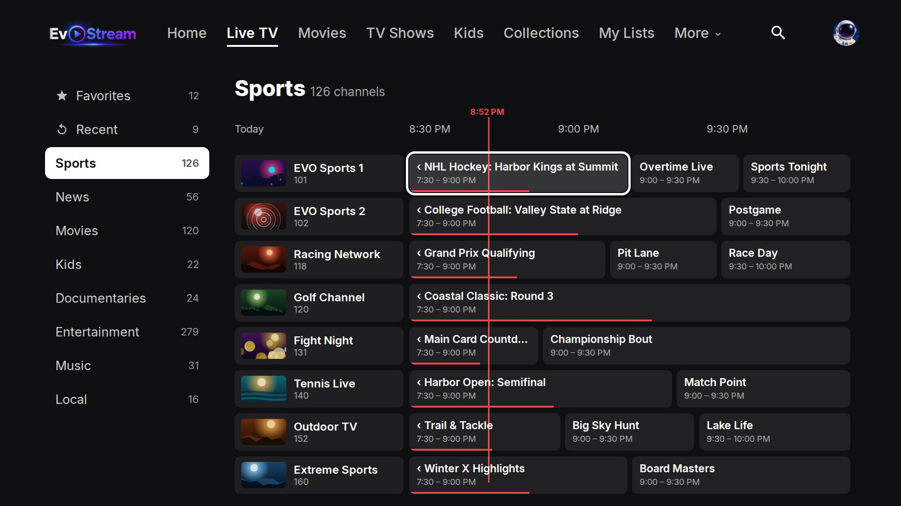
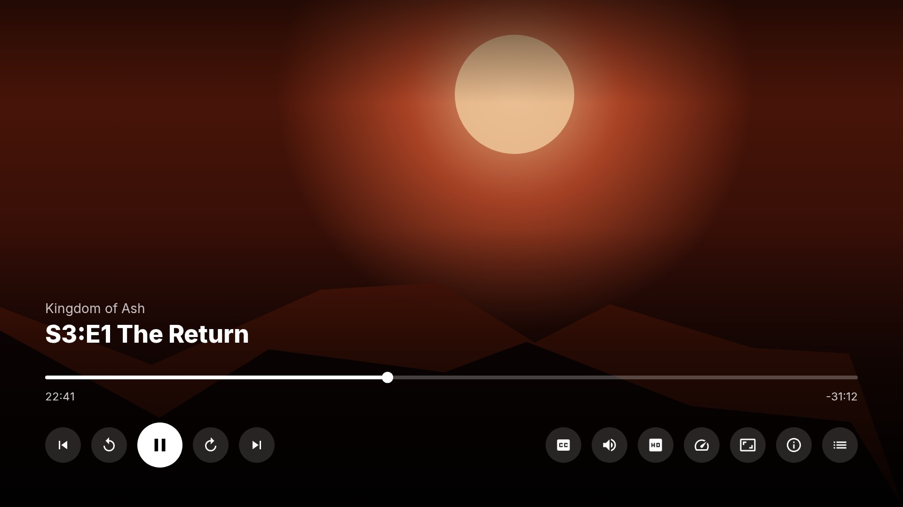

A Jellyfin companion app for personal media collections
EvoStream lets you watch the movies, shows, audiobooks and live TV on your own Jellyfin media server, on your TV. It is a client only: it comes with no content, and it shows nothing until you sign in to a server you or your household run.




Titles and artwork in these screenshots are made up for illustration.
What you need
- A Jellyfin media server (version 12 or later) with your own media on it.
- An account on that server. EvoStream signs in with Quick Connect, a code on your phone, or your username and password.
Features
- Home rows, libraries, collections and a My List per profile
- Profiles for everyone in the home, with PINs and age levels for kids
- Resume, Up Next, skip intro and credits, subtitles and audio tracks
- Audiobooks grouped by series and book
- Live TV guide for the service you already subscribe to (optional)
Platforms
Roku (beta). Android TV, Fire TV and phones are in development.
Support
Questions or problems: open an issue on GitHub.